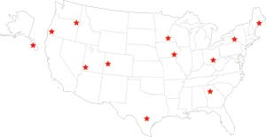
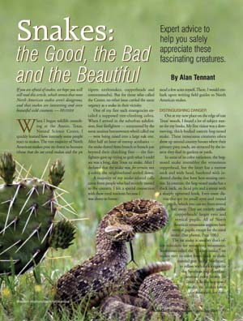

Dear Mother October/November 2006
October/November 2006
October/November 2006 Issue #218
Mother’s Basic Education
Not Convinced We’re Changing the Climate
Cinnamon Cuts Cholesterol?
Population: Explosion or Dud?
Wants Sustainable Population
Animal ID System: You Won’t Like It
Traditions Live On
Look There, It’s Lunch
Beating Bean Bugs
Pet Chow Recipes Incomplete
Eco-friendly Equipment
Solar Summer in the City
A Great Place Indeed
Been There, Didn’t Like That
Danger in the Grass
Common Sense is Key
Building Better Soil
It Works for Me
Organic Can be Simpler
Mother’s Basic Education
I have been an avid Mother Earth News reader for years and must admit that I’ve been hard pressed to think of a subject that I haven’t seen covered in your publication. It occurred to me that I have probably received more of an education in ethics, politics, economics and what many would call “just plain old common sense” by reading this one magazine than I ever did in public school. The environment is one subject that is far too important to the future of this planet to leave to chance. As the days begin to feel shorter and the world appears to spin faster, I find solace every other month in a magazine that provides the opportunity to slow down, step back and question the orbit that this planet is in. Thank you.
Travis Peterson
Newcastle, Wyoming
Not Convinced We’re Changing the Climate
Contrary to what you and former Vice President Gore continue to say, there is considerable dispute about global warming and what, if anything, man is doing to affect it. Some of the “proof” Mr. Gore offers in his movie is questionable.
I am not going to support major policy initiatives that involve huge expenditures of funds and resources on a problem based on a scare, when the science is still suspect at the very best. Most, if not all, that is being observed can be attributed to the natural warming and cooling cycles of the planet.
Folks, the planet changes. The archeological record shows there were tropical rain forests as far north as southern Canada at one time. (How many SUVs back then?) Then the glaciers moved south of Columbus, Ohio. We had nothing to do with any of that, and we’re probably not influencing a lot of what is happening now.
David Husar
Arlington, Virginia
For more information about the evidence for humanity’s role in global warming, read an excerpt from Gore’s book, An Inconvenient Truth. - Mother
Cinnamon Cuts Cholesterol
For years I’ve taken drugs and followed a low-fat diet to reduce my cholesterol and blood pressure. My cholesterol level was about 200 when I decided to try taking cinnamon capsules after reading about cinnamon’s ability to lower cholesterol and blood sugar (“Sweet Success in Staving Off Diabetes,” February/March 2006).
After taking the cinnamon for a few months, my cholesterol level dropped 35 points, to the lowest it’s been in 20 years!
Chris Long
Red Cloud, Nebraska
Population: Explosion or Dud?
As a lifelong livestock farmer, I appreciate your concern for sustaining various animal species ("Consciousness and Conscience," June/July 2006). I am puzzled by your statement: “We’re still allowing our population to skyrocket.” The population-explosion myth petered out years ago. Consider the 2005 total fertility rate (TFR, the number of children per woman). In most European countries as well as Japan and Russia the average TFR is 1.3. At that rate, much of the world will run out of human species before it runs out of animal species.
Rex Gogerty
Hubbard, Iowa
What you say is true only in developed areas, where population has tended to stabilize. However, women are having an average of nearly seven children in numerous developing countries, according to the United Nations. It took humans many millennia to reach the first billion in worldwide population and 130 years to add another billion; today, human population is increasing by a billion every 11 or 12 years. - Mother
Wants Sustainable Population
I applaud your emphasis on energy conservation, but conservation measures are doomed to fail unless the world gets control of population growth. I’m afraid the world population is already too big to sustain itself indefinitely, yet it continues to grow rapidly.
Nearly all our energy sources are finite. When we have mined all the coal, dredged up all the oil, burned all the forests and smelted all the iron and uranium, what then? If world population hasn’t been reduced to a sustainable level by then, Mother Nature will do it for us, and it won’t be pretty. If mankind survives at all, it’ll be as in the Stone Age.
Earth is the only home we will ever have. It will be difficult to change, but we must persuade everyone to reduce family size if we are to have any hope of achieving a balanced, sustainable population. Can we do it? I don’t know, but we can’t afford not to try.
J.M. Jones
Autaugaville, Alabama
Animal ID System: You Won’t Like It
I am very concerned about the impact of the National Animal Identification System (NAIS). If you have any doubt that it will affect you, go to http://www.usda.gov/nais and read the plan.
Animal owners will be required to register every horse, llama, alpaca, sheep, goat, cow, bison, chicken, turkey, etc. The plan makes no allowances for animals being raised for personal food consumption, as pets or as 4-H projects. Horse owners, for example, will have to report all movements, including trail rides, parades, shows, equestrian events, riding on public roads, and every entry and exit from a property.
Farmers will have to pass the cost of NAIS on to consumers. Added costs may force small farmers out of business. We will see higher prices and fewer options!
I want to protect my rights to buy fresh and buy local. I want to support local farmers, buy organic, know what is in my food and have a personal relationship with those who grow it.
Do not bury your head in the sand on this issue. Be informed. Write your representatives. Go to http://www.stopanimalid.org/ and http://www.nonais.org/ for more information.
Mary Bruhjell
Sandpoint, Idaho
We certainly share your concerns about NAIS, but it’s possible that some of your fears may not be justified. According to a guide for small-scale, non-commercial producers released by the U.S. Department of Agriculture in June, registration of premises is free and voluntary (which is true now, although the plan for implementation seems to anticipate mandatory registration in the future).
The recently released guide lists the following examples of events that would NOT be reported: pasture-to-pasture movement in your operation; participation in local fairs, parades or trail rides; local trading of birds among private individuals; and animal “escapes” into neighbors’ land. It says household pets are not reportable.
You can download the guide from the USDA’s NAIS page, cited above. New information appears on this page unpredictably, so check it often. - Mother
Traditions Live On
I read with amusement your article describing strategies to integrate locally produced foods into your diet ("How to Find the Best Food," August/September 2006). Just the day before, my 31-year-old daughter had pronounced my husband and me “dinosaurs” for our quaint old habits of gathering wild nuts and berries, using native plants as cures for bug bites and poison ivy, and our insistence upon gardening. Preserving food at home, whether from our garden, the local orchard or the wild Appalachian foothills is hot, heavy work, but to us it is worth every minute of it. Nothing can compare to the satisfaction we enjoy come November, knowing our little house is brimful with foods we have preserved ourselves. We can’t imagine living any other way, and besides, someone needs to keep alive the values and traditions of our little corner of Appalachia. Thanks, and keep up the good work.
Melinda Bays
Portsmouth, Ohio
Look There, It’s Lunch
As a child born during the Great Depression, there is always the thought in the back of my head: “What if I suddenly find I have no money at all?” Well, I won’t starve. Motivated by the “no money at all” thought, I have explored my small yard in my very small mid-Illinois town and discovered many edible things growing on their own. Dandelions, of course, offer good greens. Daylily sprouts are prolific and taste like asparagus when steamed. Violet leaves are like spinach. Strawberries, spread from three plants rescued from an abandoned farmhouse, provide more than I can eat. Raspberries spread like crazy and have to be trimmed back to an area that provides enough to eat without crowding out other things. Kale offers attractive, edible greens all year. Asparagus pops up regularly. Mulberries are good added to dry cereal.
I bury kitchen waste in the garden to help fertilize, and every year I am rewarded with volunteer potatoes that grow from the peels I bury. Volunteer tomatoes and squash have kept me supplied for years. Walnuts add protein to my diet. So do acorns, which are not exactly tasty, but would do in a crisis. Garlic grows so thick my yard smells like an Italian restaurant when I mow. Pawpaws, peaches and cherries have sprouted up voluntarily and offer fruit if I can beat the birds. The point I want to make is that Mother Earth (the planet) provides us with “real food” with very little effort on our part. We only need to recognize and appreciate it.
Sharon Lindsay
Lovington, Illinois
Beating Bean Bugs
Barbara Pleasant’s article "Discover Real Green Beans" (August/September 2006) contains a segment about battling Mexican bean beetles. More than 50 years ago, a neighborhood granny taught me a great secret.
She said, “Always plant cucurbits in with your beans. They put out a substance the bean-eating bugs don’t like, and the beans return the favor with something the cucurbit-eating bugs don’t like.” (Cucurbits include cucumbers, melons, squash and pumpkins. - Mother)
She grew her climbing plants on tall tipis made of long stalks with chicken wire wrapped around them. She left an entrance on one side and made a thick bed of straw in the middle. One of my jobs was to push the tiny growing melons, squash and bean blossoms through the wire, so they could be picked from the inside. Besides keeping us out of the sun when we picked, if we missed any fruits and they fell off upon ripening, they didn’t break.
So, no need to reach for chemicals or buy beneficial insects to control bean-eating bugs, just companion plant your beans with cucurbits.
Marian Elsi Boone
Akron, Colorado
Back to the Simple Life
This is just a note to say that I am excited to be receiving your well-written words again. As many say, sometimes you have to look in your own back yard to find the diamond mine. After many years of searching, I have returned to my homestead roots, and living simply, for me, is pretty close to heaven.
I look forward to each issue as it teaches, refreshes and inspires me not only to seek this type of life daily, but to touch other folks’ life paths with ways to take care of Mother Earth.
Lots of love, light and blessings,
Theresa Byer
Lake Wales, Florida
Pet Chow Recipes Incomplete
In your article "Natural Pet Foods" (June/July 2006), the recipes for “Simple Homemade Pet Chow” should have included a statement that those particular recipes do not provide balanced nutrition and should be used only for occasional, supplemental feeding. These recipes are lacking in key nutrients, and the calcium/ phosphorus ratio is incorrect. I personally believe that a home-prepared diet is superior to any of the commercial offerings, including the “natural” and “organic” products mentioned in the article.
The books by Strombeck and Pitcairn and others listed in the resources section do contain recipes that are balanced.
Susan Tillman
Jerome, Arizona
Eco-friendly Equipment
What a great article! ("Solar-electric Mowers & Tractors," August/September 2006) I’ve been lamenting the over-reliance of farming on diesel-powered tractors since taking on 130 acres of land a couple of years ago. I’ll definitely be taking a closer look at some of these more eco-friendly alternatives.
I’m not sure that we’d get sufficient sunlight here in Scotland to make a completely solar-powered tractor a sound investment, but an electric tractor/grass-cutting machine would be a huge step in the right direction.
Thanks very much for posting this informative article!
Anne Taylor
United Kingdom
Solar Summer in the City
I planned my solar-powered summer in my head for years. Recent employment changes have now allowed me to start building this dream.
I’ve started off small by mounting a few panels on the south-facing roof of our garden shed in the back yard of our Saskatchewan home. For those who don’t know, our summers are short, our winters are long, and we have more sun than most places.
The system is simple for now, just three 10-watt panels running to a controller, which charges three 6-volt deep-cell batteries. My 2,000-watt inverter converts this electricity into deck parties, hedge trimming sessions and power for my cordless mower, drills, shavers and just about anything else I can recharge.
I’m already planning my “grid-tied in the city” system - that’s two years out, I imagine. The way to go is to build a power credit during the day and draw that power back at night. Further out … straw bale cottage, solar/wind power supply, children to pass the summer on to!
Morgan Wadsworth
Regina, Saskatchewan
Great Places: Some Agree, Some Don’t
A Great Place Indeed
As a 30-plus year resident of Fairfield, Iowa, I couldn’t agree more with the “great place” designation you have bestowed on us! ("12 Great Places You’ve Never Heard Of" August/ September 2006) Fairfield is a wonderful, wonderful place to live! The town is one of the most creative and economically vibrant communities in the nation and a lesson in excellence in American rural living. I am one of the community members who came for the university but stayed for Fairfield. I cannot imagine living anywhere else, despite having traveled around the country and overseas.
For all the reasons you mention, plus many, many others, my husband and I work and volunteer in Fairfield, are raising our family here and intend to retire here.
Holly Moore
Fairfield, Iowa
Been There, Didn’t Like That
I was disappointed by your decision to include Grand Junction, Colo., among the 12 “great places." I’ve lived near Grand Junction for nearly a decade, and my experience has been overwhelmingly negative. The people are close-minded and intolerant of those who are different, the beautiful scenery is rapidly losing out to an oil and gas industry with an enormous presence, and a chain restaurant or superstore sits on nearly every corner, with more going up daily. I’ve never seen a place with less commitment to sustainability and the environment. And by the way, the Main Street Dinosaur Museum moved to the nearby, quieter town of Fruita several years ago.
Madisen Bonnell
Fruita, Colorado
This article drew an unusual level of response - readers clearly feel strongly about places they love (or, frankly, hate). The museum, now called Dinosaur Journey, is indeed in Fruita, about 20 miles northwest of Grand Junction; our apologies for implying otherwise. - Mother
Snakes: Beware, or Just Take Care
Danger in the Grass
In regard to Alan Tennant’s "Snakes: the Good, the Bad and the Beautiful" (June/July 2006) and your note that most snakes aren’t dangerous, I agree that most North American snakes are not dangerous because their bite is not poisonous. However, I believe that Tennant’s statement that “the outdoors is full of dangers … and snake bites are surely among the least of them” is a great error.
As we country people go about our everyday tasks where I live, poisonous snakes are almost the only dangerous thing to worry about, outside of brown recluse and black widow spiders. I know people who have been bitten by copperheads and rattlesnakes. They didn’t die, but the pain, longtime suffering (recovery from poisonous snakebites is not like overcoming a summer cold) and the lifetime disfigurement give me the incentive to always have an alert eye out for the poisonous varieties and send them to their next life.
Don Yoes
May, Texas
Common Sense is Key
Thanks for your wonderfully informative and timely article concerning snakes ("Snakes: the Good, the Bad and the Beautiful," June/July 2006). I hope some of your readers will take the author’s message to heart and understand that snakes in general are neither aggressive nor evil, as many people are led to believe. Myths about snakes are apparently deep-seated in the fears of otherwise rational people, and changing that perception is difficult, as Mr. Tennant says.
Here in rural southeast Georgia, rat snakes are common. Even though they’re a beneficial and important part of the ecosystem, they are often mistaken for poisonous predators, to be killed on sight. Articles like this one at least strike a blow for education and tolerance for these animals. Common sense and care should be the rule when it comes to any snake, poisonous or harmless, and I thank you for presenting that point of view.
Eddie Ledbetter
Register, Georgia
Organic Fertilizer: Fans and Pans
Building Better Soil
Steve Solomon’s article, "A Better Way to Fertilize Your Garden" (June/July 2006), did an excellent job describing how to make and use your own organic fertilizer. It included some information I’ve been searching for over the past two years. Until I read his article, I had not been able to find good information on how often to safely add the non-nitrogen parts of the mix. Experience has shown me that fertilizing organically is not as simple as it appears.
Sue Barthelow
Auburn, California
It Works For Me
I’ve been through this article ("A Better Way to Fertilize Your Garden") tooth and nail and must say it is the finest process for fertilizing I’ve ever known. I can’t wait until next year to put it to use. I have been organic all my life, but not to this degree. Thank you for all your input.
Oscar E. Saul
Bainbridge, Georgia
Organic Can Be Simpler
While Steve Solomon’s promotion of organic methods is commendable, I question some of the details in his approach.
Solomon’s article ("A Better Way to Fertilize Your Garden") says, “The whole concept of soil pH is controversial.” I disagree. If your soil pH is out of whack, your plants cannot take up nutrients even if they are in the soil. Solomon recommends plenty of limestone, which is generally used to increase soil pH (and add calcium, perhaps also magnesium). But limestone, or Solomon’s mix, should not be applied everywhere; either would make the pH of already alkaline soils - common in the West - too alkaline.
In my opinion, Solomon’s fertilizing regime overemphasizes the use of concentrated organic fertilizers. A hallmark of organic agriculture is the use of abundant amounts of bulky organic materials, such as compost, leaves and straw, which not only nourish plants but also provide physical and biological benefits to the soil. On average, a single application of a 1-inch depth of compost should supply all the nutrients vegetables need for a season. This might not provide optimum nitrogen where vegetables are grown very intensively, in which case it can be supplied by a seedmeal such as soybean meal. Compost made from an array of materials will contain a broad spectrum of nutrients; an occasional sprinkling of kelp ensures that all nutrients are accounted for.
My vegetable gardens produce over 90 percent of my family’s vegetables year-round from soil that has received, once a year in autumn for the past 20 years, nothing more than a sprinkling of soybean meal topped with a 1-inch icing of compost.
Lee Reich
New Paltz, New York
Steve Solomon replies:
In terms of changing soil pH, the amount of limestone in my recipe is quite small, not “plenty” as you assert, although that small amount truly is plenty enough to provide calcium as a plant nutrient. The alkaline soils of the West are usually alkaline because they contain too much sodium, thus vegetables growing on them still need calcium. In that situation, the calcium is best supplied as gypsum because the sulfate ions in gypsum tend to slightly acidify the soil.
I’ve grown food on six different soils (from clay to sand) in three different climates over 33 years of food gardening, and I think my recipe will produce better results than your compost with soymeal and kelp. I challenge you to mix up some complete organic fertilizer exactly as in my article, apply it to a section of your garden in the quantities I suggest, side-dress additional fertilizer around all medium- and high-demand vegetables as they grow, and cut your input of compost to those areas to a layer no thicker than a quarter-inch raked into the surface. Write back at the end of that growing year. I look forward to seeing another sort of letter from you late in the summer of 2007.
Steve Solomon
Exeter, Tasmania, Australia
|
 MATTHEW T. STALLBAUMER 12 Great Places to Live (August/September 2006) |
 The Good, the Bad and the Beautiful (June/July 2006) |
 Discover Real Green Beans (August/September 2006) |
 Natural Pet Foods (June/July 2006) |
|
|